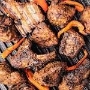

Home
Nyama Choma Recipe

Description
Nyama choma is East Africa's iconic grilled meat dish (traditionally goat meat, or mbuzi, though beef or lamb also works).
Authentic recipes keep the focus on simple spices and slow charcoal roasting
Ingredients
- Meat: 1.5 kg to 2 kg of bone-in goat meat (or beef/lamb)
- 3 crushed garlic cloves
- 1 tbsp grated fresh ginger
- Juice of 1 lemon
- 2 to 3 tbsp oil (olive or sunflower)
- 1 tsp paprika, 1 tsp ground cumin, salt, and black pepper to taste
- Basting Mix: 2 tbsp salt dissolved in 1.5 to 2 cups of water
Steps
- Prep the Meat: Make small cuts or 2-inch slits into the meat so the flavors and heat can penetrate
- Marinate: Rub the garlic, ginger, lemon juice, oil, and spices all over the meat. Let it marinate in the fridge for at least 2 hours or overnight.
- Set Up the Grill: Prepare a medium-low charcoal grill. Allow the coals to develop a layer of ash to prevent harsh flare-ups.
- Grill and Baste: Place the meat on the grill. Turn every 10 minutes and periodically flick or brush the saltwater brine over the meat to keep it tender and build a savory crust.
- Slow Cook / Rest: Cook for about 45 minutes to 1.5 hours depending on the size of the cuts until well-done and tender. Wrap briefly in foil if you prefer it softer. Let it rest for 5 to 10 minutes before chopping.